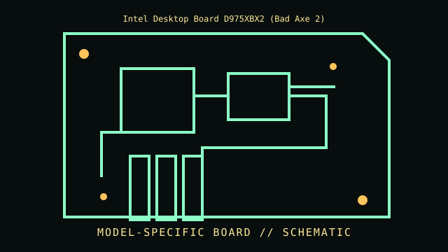

[ INDIVIDUAL COMPONENT // MOTHERBOARDS ]
Intel Desktop Board D975XBX2 (Bad Axe 2)
LGA775 / Intel 975X, 2006–2007. This entry documents one exact board model/revision; its specifications are not interchangeable with similarly named variants.

REVISION WARNING: Confirm the PCB silk-screen, assembly/AA code and firmware ID on the actual board. Where documentation does not identify one PCB spin, this record states the exact documented model and explains the revision distinction below.
Specifications
| Exact model / revision | D975XBX2; identify PCB revision and three-character AA number from the board |
|---|---|
| CPU / socket | LGA775 Core 2 Duo/Extreme and selected Quad processors per Intel AA/BIOS list |
| Chipset / platform | Intel 975X northbridge + ICH7R southbridge |
| Memory | Four DDR2 DIMM slots, dual-channel; capacity, ECC/non-ECC and supported speed require exact board guide |
| Form factor | ATX |
| I/O and expansion | Two PCIe x16 graphics slots, PCIe x1, legacy PCI, SATA, PATA, USB 2.0, Gigabit Ethernet and integrated audio |
| Firmware compatibility | Intel BIOS; later 45 nm/quad-core support, where listed, requires a minimum BIOS and exact board AA |
Compatibility and revision pitfalls
Bad Axe and Bad Axe 2 are different products; D975XBX is not D975XBX2. Match silkscreen/model, AA and BIOS against Intel documentation. Power delivery/thermal limits and BIOS revision can exclude CPUs that physically fit LGA775.
Socket fit alone is not proof of support. Confirm the manufacturer CPU support list, the board's minimum BIOS, memory population table, and exact chassis/power requirements before operation.
Preservation notes
Preserve BIOS chip/recovery state, board AA label and original chipset cooling hardware. Photograph DIMM mapping and PCIe slot population; inspect VRM capacitors and socket contact condition before applying power.
Record provenance, date/serial codes, board and firmware revision, known repairs and test conditions. Photograph labels and connectors before cleaning or component removal; retain original firmware and configuration data when possible.
Sources & further reading
- Intel D975XBX2 Technical Product Specification — archived scanArchived model-specific technical specification; includes board identifiers, interfaces and processor/BIOS qualification details.
- Intel D975XBX2 support archiveIntel manufacturer support record for BIOS and compatibility notes; verify the complete AA number.
Manufacturer manuals, CPU lists and archived primary documents take precedence over reseller summaries. If an archived support page omits a revision-specific file, do not assume another revision's firmware is compatible.